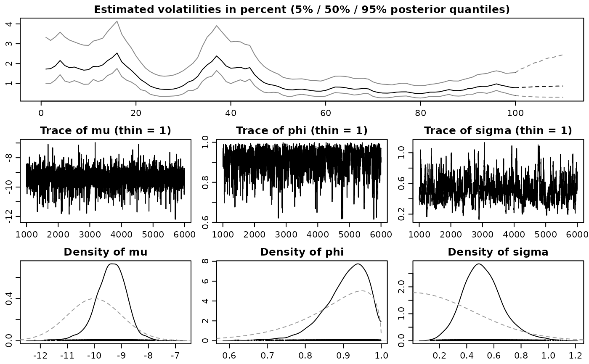
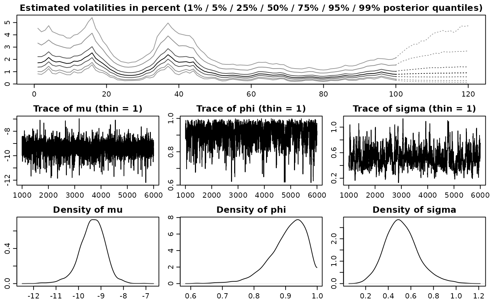

plot.svdraws and plot.svldraws generate some plots visualizing the posterior
distribution and can also be used to display predictive distributions of
future volatilities.
svdraws object.
nonnegative integer or object of class svpredict, as
returned by predict.svdraws. If an integer greater than 0 is
provided, predict.svdraws is invoked to obtain the
forecast-step-ahead prediction. The default value is 0.
vector of length ncol(x$latent), providing optional
dates for labelling the x-axis. The default value is NULL; in this
case, the axis will be labelled with numbers.
logical value, indicating whether the initial volatility
exp(h_0/2) should be displayed. The default value is FALSE.
Only available for inputs x of class svdraws.
logical value, indicating whether the observations should be
displayed along the x-axis. If many draws have been obtained, the default
(TRUE) can render the plotting to be quite slow, and you might want
to try setting showobs to FALSE.
logical value, indicating whether the prior distribution
should be displayed. The default value is TRUE.
vector of line type values (see
par) used for plotting quantiles of predictive
distributions. The default value NULL results in dashed lines.
The length of tick marks as a fraction of the height of a line of
text. See par for details. The default value is
-0.4, which results in slightly shorter tick marks than usual.
numerical vector of length 4, indicating the plot margins. See
par for details. The default value is c(1.9,
1.9, 1.9, 0.5), which is slightly smaller than the R-defaults.
numerical vector of length 3, indicating the axis and label
positions. See par for details. The default value is
c(2, 0.6, 0), which is slightly smaller than the R-defaults.
object of class svsim as returned by the SV simulation
function svsim. If provided, the “true” data generating
values will be added to the plots.
corresponds to parameter newdata in predict.svdraws.
Only if forecast is a positive integer and predict.svdraws
needs a newdata object. Corresponds to input
parameter designmatrix in svsample.
A matrix of regressors with number of rows equal to parameter forecast.
further arguments are passed on to the invoked plotting functions.
Called for its side effects. Returns argument x invisibly.
These functions set up the page layout and call volplot,
paratraceplot and paradensplot.
In case you want different quantiles to be plotted, use
updatesummary on the svdraws object first. An example
of doing so is given in the Examples section.
updatesummary, predict.svdraws
Other plotting:
paradensplot(),
paratraceplot(),
paratraceplot.svdraws(),
plot.svpredict(),
volplot()
## Simulate a short and highly persistent SV process
sim <- svsim(100, mu = -10, phi = 0.99, sigma = 0.2)
## Obtain 5000 draws from the sampler (that's not a lot)
draws <- svsample(sim$y, draws = 5000, burnin = 1000,
priormu = c(-10, 1), priorphi = c(20, 1.5), priorsigma = 0.2)
#> Done!
#> Summarizing posterior draws...
## Plot the latent volatilities and some forecasts
plot(draws, forecast = 10)

## Re-plot with different quantiles
newquants <- c(0.01, 0.05, 0.25, 0.5, 0.75, 0.95, 0.99)
draws <- updatesummary(draws, quantiles = newquants)
plot(draws, forecast = 20, showobs = FALSE,
forecastlty = 3, showprior = FALSE)
